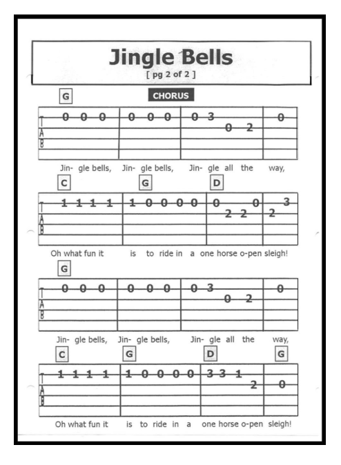
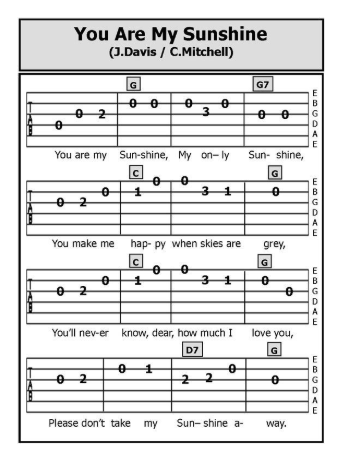
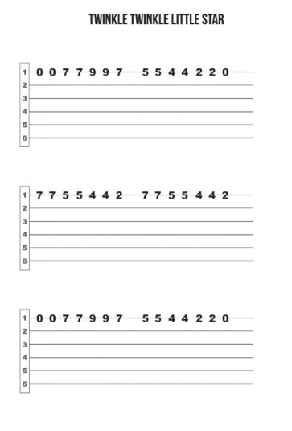

Как да се научим да четем таблатури?
Таблатурите (или просто „таби“) са лесен и достъпен начин за научаване на китара, особено за начинаещи. Те представляват графично представяне на струните и позициите на пръстите върху грифа на китарата, което помага да разберем кои ноти да изсвирим. Като имаме на предвид, че таблатурите са доста по лесни за използване, тъй като не изискват музикална теория и са перфектни за хора, които свирят на китара, за да разпуснат.
Какво представлява таблатурата?
Таблатурата е диаграма с шест линии, които съответстват на шестте струни на китарата:
- Най-долната линия представлява най-дебелата (шеста) струна.
- Най-горната линия е най-тънката (първа) струна.
Числата върху линиите показват на кой праг трябва да поставите пръста си:
- 0 означава, че струната се свири свободно (без да я притискате).
- 1, 2, 3 и т.н. показват конкретния праг, на който трябва да натиснете.
Пример:
e|---0---| (1-ва струна – свободна)
B|---1---| (2-ра струна – 1-ви праг)
G|---2---| (3-та струна – 2-ри праг)
D|---2---| (4-та струна – 2-ри праг)
A|---0---| (5-та струна – свободна)
E|-------| (6-та струна – не се свири)
Основни елементи на таблатурата
- Линии и числа: Линиите са струни, а числата показват прагчетата.
- Специални символи: Таблатурите често съдържат символи, които показват специфични техники на свирене.
- h – Hammer-on (притискане на праг без да удряте струната).
- p – Pull-off (освобождаване на пръста за свирене на предишен праг).
- / или \ – Slide (плъзгане между прагчетата).
- ~ – Vibrato (трептене на нотата).
- x – Заглушаване на струните.
- Ритъм: Повечето таблатури не показват точно ритъма, така че е добра идея да слушате оригиналното изпълнение на песента, докато свирите.
Първи стъпки с таблатурите
- Запознайте се с китарата: Знайте имената на струните (E, A, D, G, B, e) и как да натискате правилно прагчетата.
- Започнете с прости песни: Изберете таблатури на песни, които съдържат лесни акорди или мелодии с една струна.
- Упражнявайте пръстовите позиции: Опитайте упражнения за пръсти, като свирите низходящи и възходящи последователности.
- Научете се да следвате ритъма: Слушайте как се изпълнява песента, за да имитирате времето и темпото.
Предимства на таблатурите
- Лесни са за разбиране.
- Не изискват познания по музикална теория.
- Предлагат директен начин да научите популярни песни.
Таблатури за начинаещи
Ето и малко таблатури за начинаещи:
e|---0---|---0---|---3---|
B|---1---|---1---|---3---|
G|---2---|---2---|---0---|
D|---2---|---2---|---0---|
A|---0---|---3---|---2---|
E|-------|-------|---3---|
Примери на таблатури

Jingle Bells

Your Are my Sunshine

Twinkle Twinkle Little star